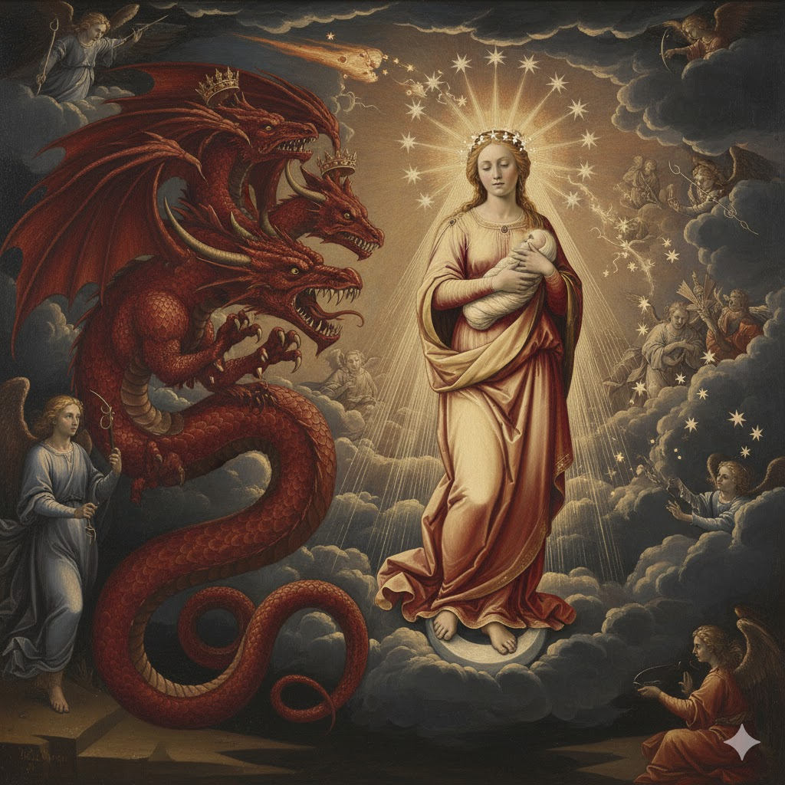
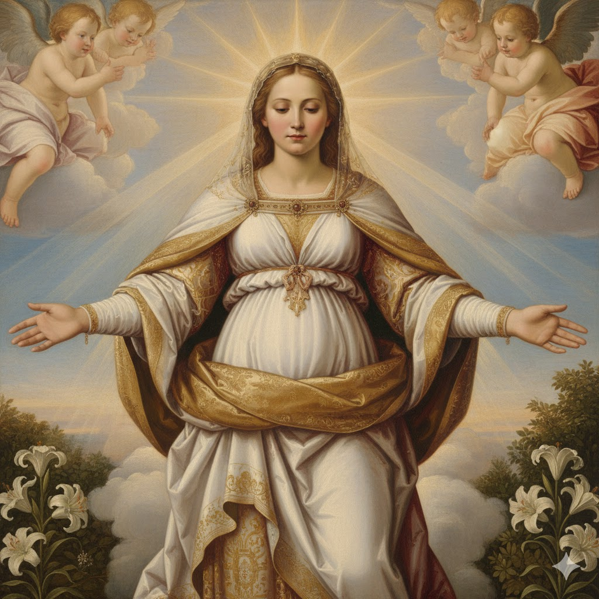
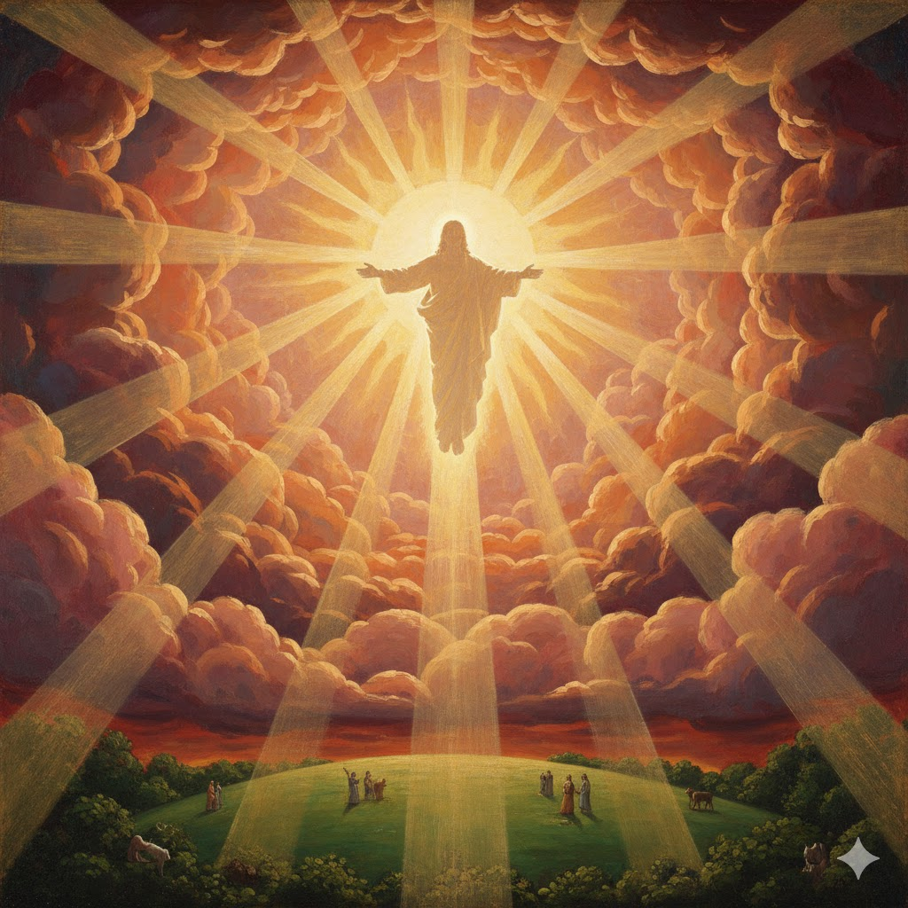
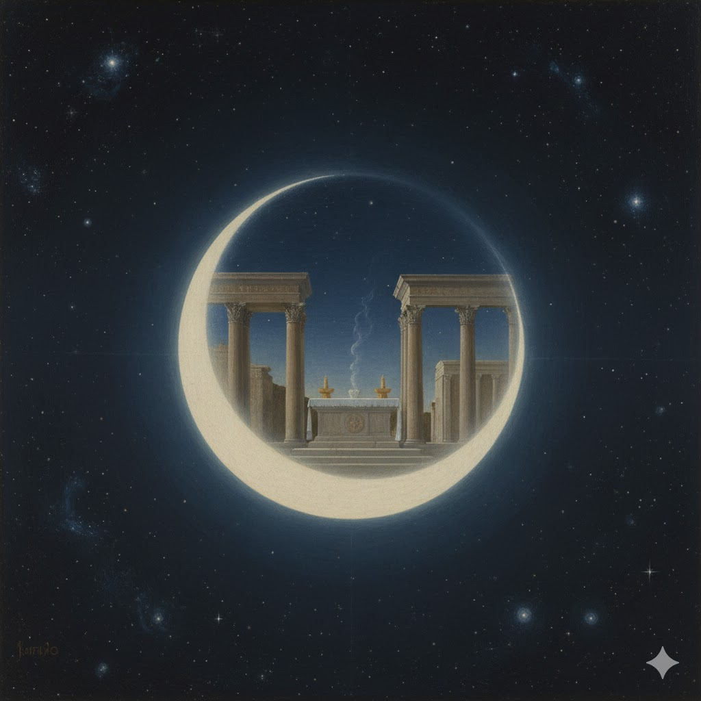
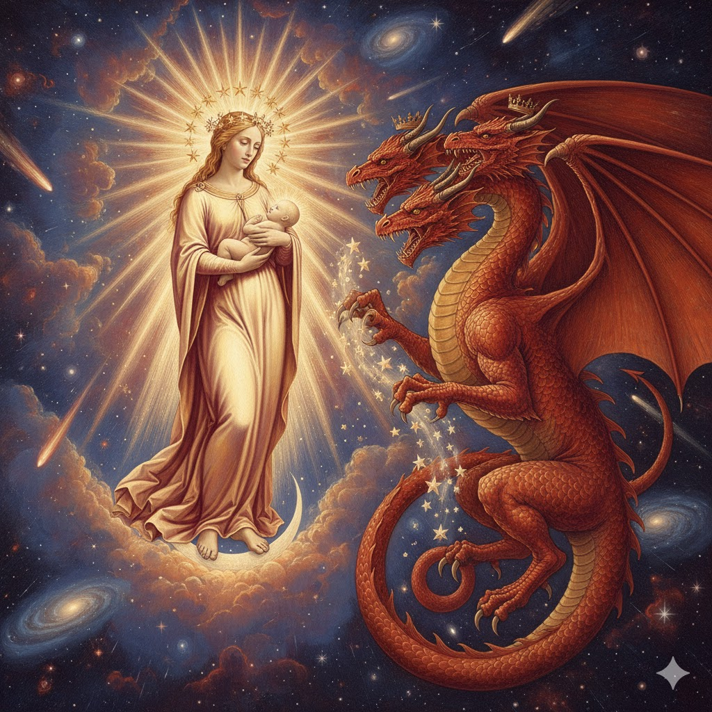
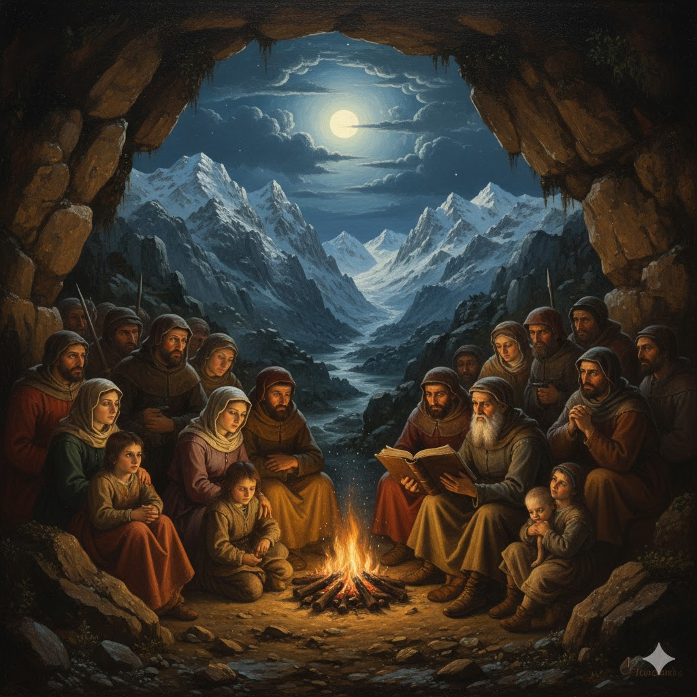
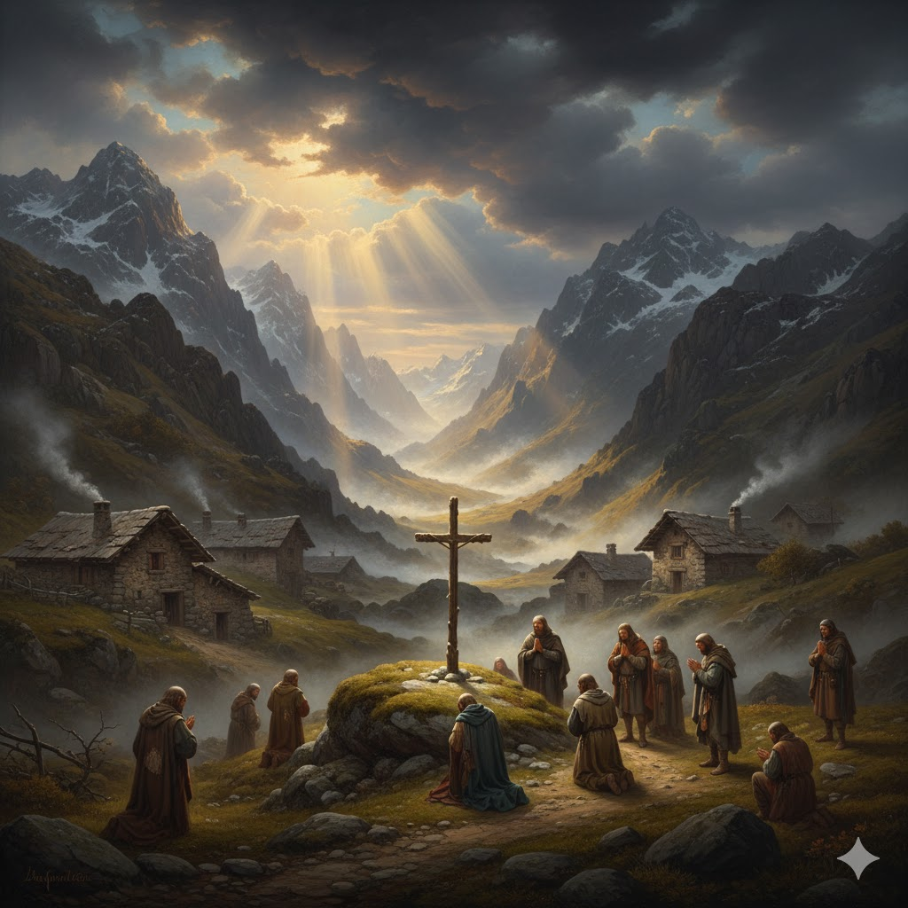
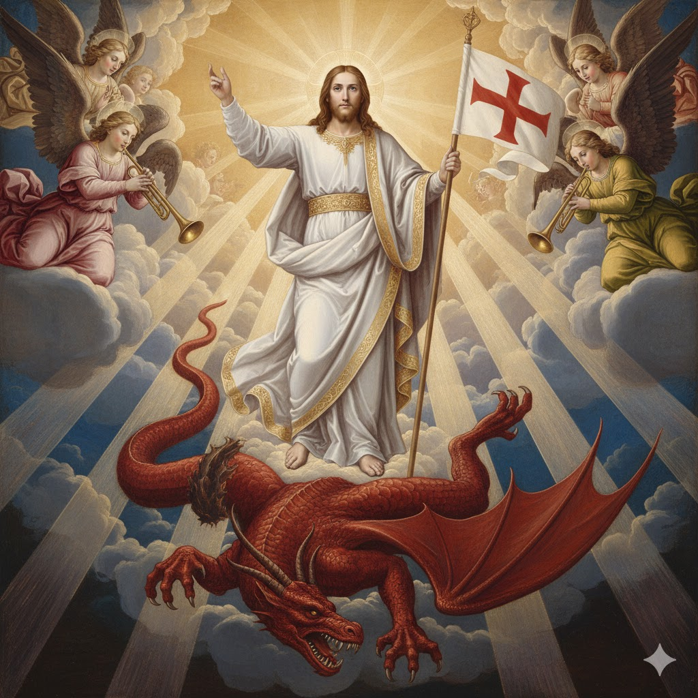

Introdução
Chegamos agora à parte central do livro de Apocalipse, os capítulos 12 a 14. Até aqui estudamos a porção histórica do livro: as sete igrejas, os sete selos e as sete trombetas. Depois desta parte central estudaremos a porção escatológica do livro: as sete pragas, a queda de Babilônia, o milênio e a Nova Jerusalém.
Os capítulos 12 a 14 de Apocalipse não seguem uma clara progressão histórica. Em vez disso, ocorre uma espécie de montagem animada que nos conduz repentinamente para adiante e para trás, de modo a produzir em nós a impressão desejada. Enquanto estivermos estudando esta parte central do Apocalipse devemos estar atentos a estas transições abruptas na linha do tempo.
Apocalipse 12 nos apresenta uma sinopse do grande conflito entre o bem e o mal, entre Deus e Satanás. Podemos dividir este capítulo em quatro tópicos: a) A origem do pecado e o início do conflito no Céu; b) Ataques de Satanás a Cristo, quando Este viveu entre os homens; c) Perseguição à igreja nos séculos subsequentes; d) Guerra final de Satanás contra o remanescente de Deus.

Uma Mulher Vestida de Sol
👩 Mulher

A igreja
☀️ Vestida de sol

Cristo, o Sol da justiça
🌙 Lua

Sacrifícios do AT
⭐ 12 estrelas

12 tribos e 12 apóstolos
O Dragão Vermelho
Perseguição à Igreja
Frustrado ao tentar matar o menino Jesus, o grande dragão vermelho volta agora seu ódio contra a mãe, a mulher (igreja). Usando instrumentalidades humanas, Satanás arrojou uma sangrenta perseguição à igreja de Cristo.
Jesus havia advertido: "Sereis odiados de todos por causa do meu nome..." (Mateus 10:22). Quase todos os apóstolos morreram como mártires. Jerusalém foi destruída no ano 70 d.C. e milhares de cristãos foram mortos.
⏳ As Três Formas do Período Profético
| Expressão | Referência | Equivalência |
|---|---|---|
| 1.260 dias | Apocalipse 12:6 | 1.260 anos |
| 42 meses | Apocalipse 13:5 | 42 x 30 = 1.260 anos |
| 3,5 tempos | Apocalipse 12:14 | 3,5 x 360 = 1.260 anos |
📅 Período de Perseguição: 1.260 Anos (538-1798)
⛰️ Valdenses

Refugiados nos Alpes
🔥 Albigenses

Perseguidos na França
⚔️ Huguenotes

Protestantes franceses
A Mulher Vai para o Deserto

A Vitória Final

Conclusão
Hoje o grande conflito entre as forças do bem e do mal está em andamento. Cada um de nós precisa tomar uma posição e decidir de que lado ficar no grande conflito.
Jesus deixou claro que existem apenas dois caminhos, um estreito que conduz à vida, e um largo, que conduz à perdição. No caminho estreito existem muitos obstáculos e tentações, porém, podem ser vistas as pegadas de Jesus, e podemos avançar firmes em direção ao alvo, a coroa da vida eterna (Apocalipse 2:10).

📝 MINHA DECLARAÇÃO DE FÉ
Assinale com um X se concordar com as declarações abaixo: